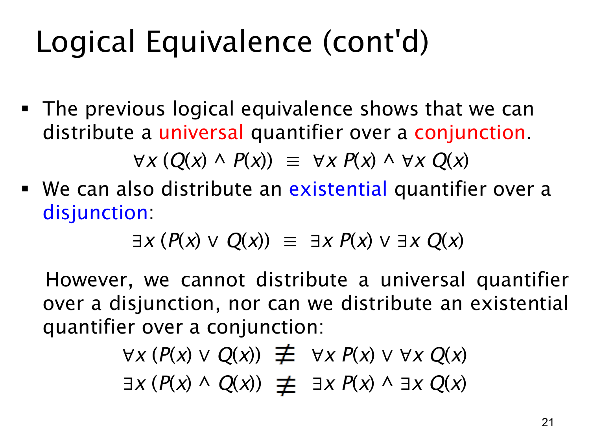

L1.2 · 第 21 页讲解原文
查看这一页课件

哪些量词分配律成立，哪些不成立
上一页证明全称量词可跨合取拆分；本页再给出与之对应的存在量词可跨析取拆分：
∀x(P(x)∧Q(x))≡(∀xP(x))∧(∀xQ(x)),
∃x(P(x)∨Q(x))≡(∃xP(x))∨(∃xQ(x)).
第二式的理由是：有某个对象满足“P 或 Q”，就意味着存在一个满足 P 的对象，或者存在一个满足 Q 的对象；反向也显然成立。两边的见证可以来自其中任一分支。
课件同时用“≡”提醒另两种看似相似的拆法一般不成立：
∀x(P(x)∨Q(x))≡(∀xP(x))∨(∀xQ(x)),
∃x(P(x)∧Q(x))≡(∃xP(x))∧(∃xQ(x)).
用两个人的论域可以同时看清区别。设 Alice 只满足 P，Bob 只满足 Q。每个人都满足 P∨Q，所以第一组左式真；但并非人人满足 P，也并非人人满足 Q，右式假。另一方面，存在一个满足 P 的 Alice，也存在一个满足 Q 的 Bob，所以第二组右式真；却没有同一个人同时满足 P 和 Q，左式假。
记忆时不要只看“量词移进或移出括号”这个表面动作，要检查量词要求的是每个对象还是某个共同见证。两条等价式可双向使用；两条 ≡ 只表示不能普遍视为相同，在某些具体情境中仍可能碰巧同真或同假。